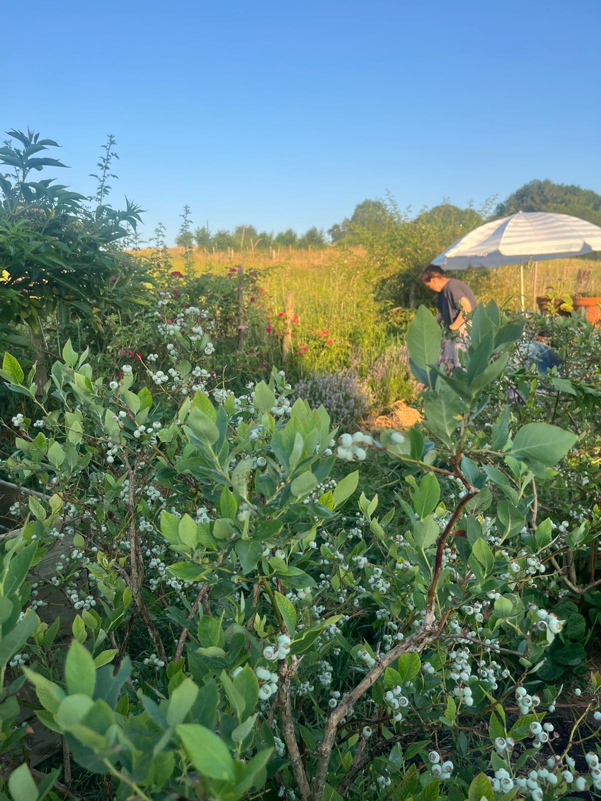
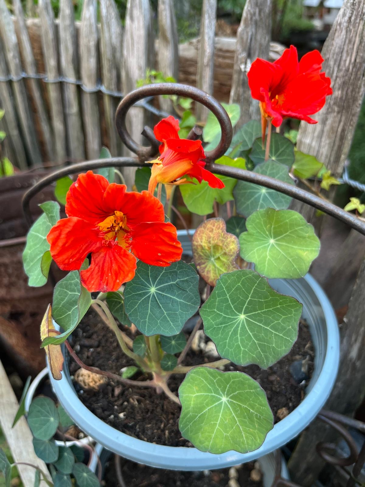
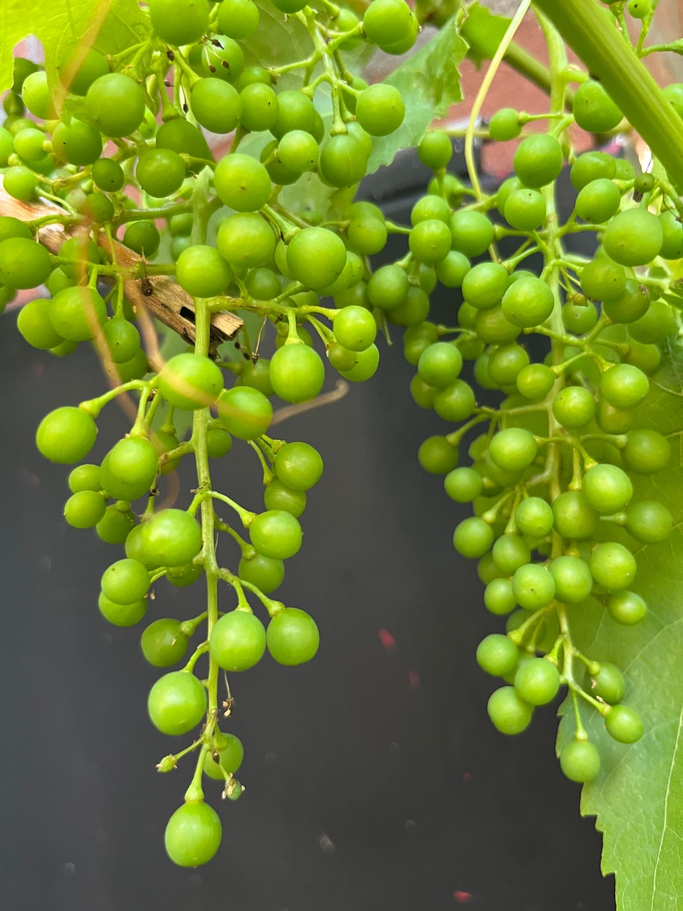
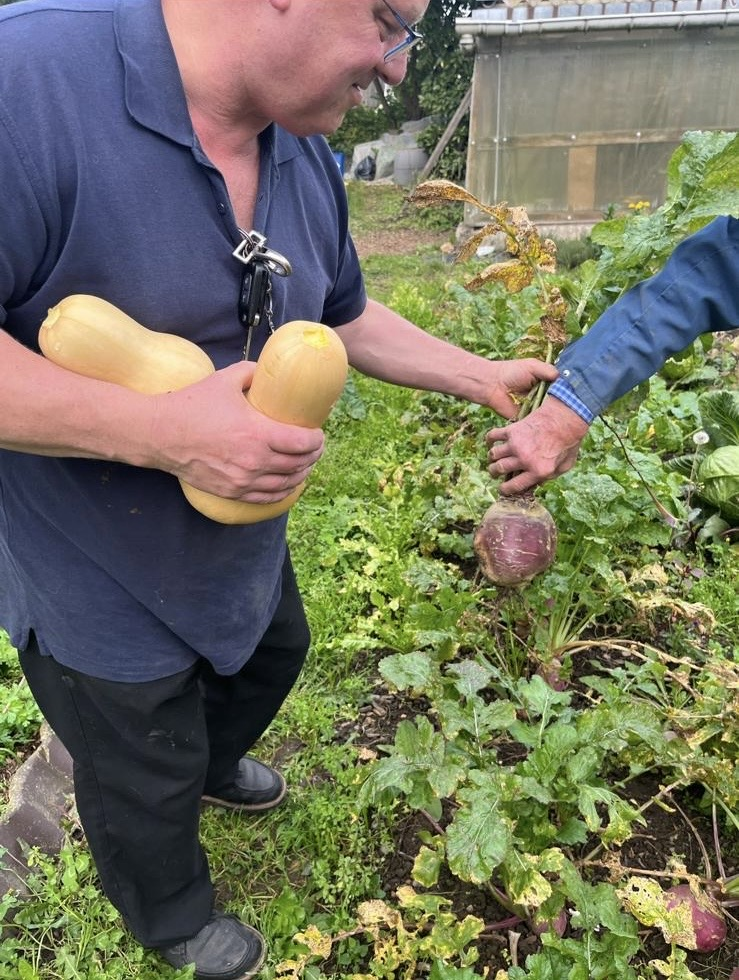
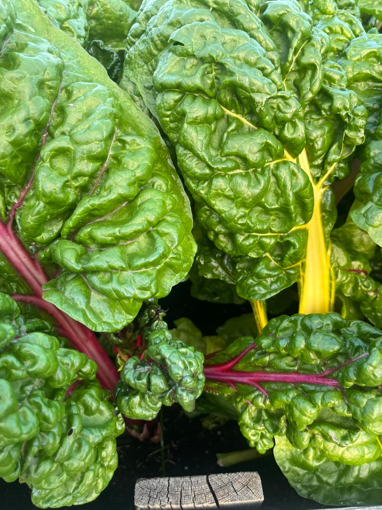
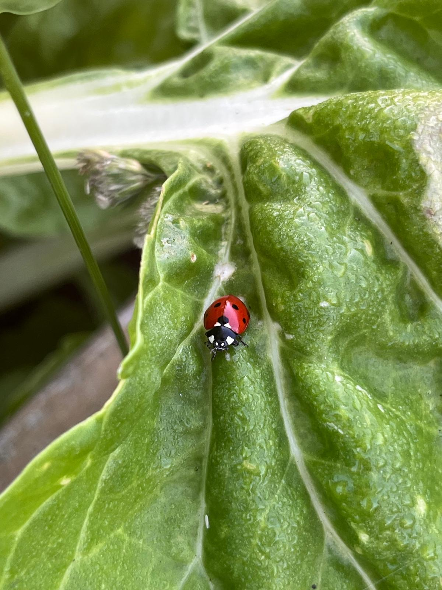

— de tuin
— eigen kruiden
— rode tomaten
— oogst van de dag — eigen aardbeien
— eigen aardbeien

— snijbiet in kleur
— lieveheersbeestje op bezoek — pepers aan de plant
— pepers aan de plant
— binnenkort
— binnenkort
— binnenkort
— binnenkort